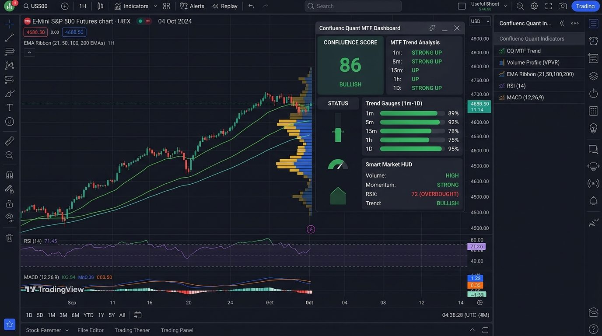
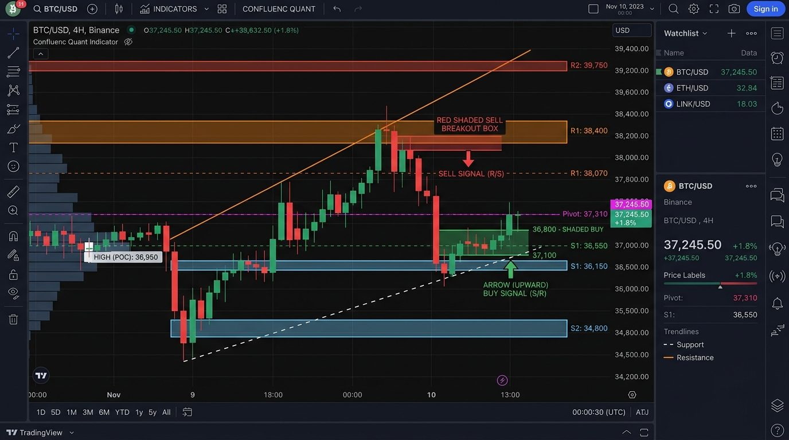
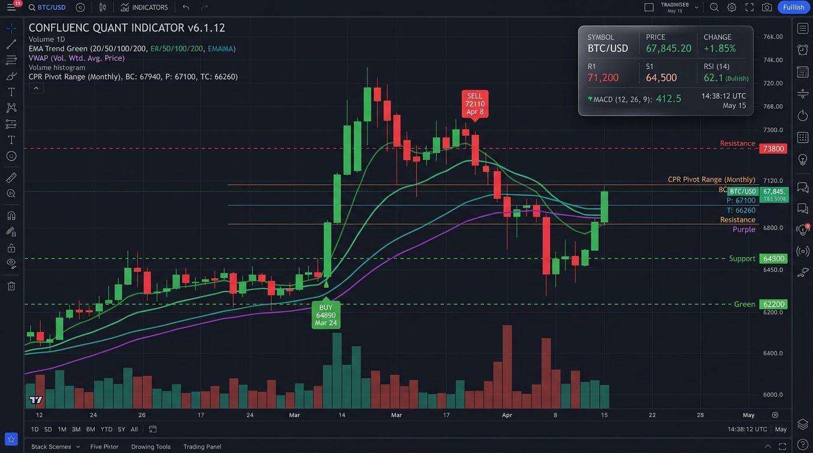

Simplified Chart Analysis
Bring multiple technical analysis tools together in one organized interface.
Explore trend analysis, support and resistance, VWAP, CPR, market dashboards, and other technical analysis tools in one organized TradingView indicator.
Continue to the Superprofile checkout page to complete your purchase.
Confluenc Quant combines essential technical analysis layers into a structured, cohesive environment to reduce chart clutter and support your systematic decision-making.
Bring multiple technical analysis tools together in one organized interface.
Review trend direction and EMA-based visualizations as part of your analysis process.
Review support and resistance, trendlines, VWAP, and CPR information without repeatedly switching between separate tools.
Use available TradingView alert functionality to follow relevant market conditions.
Every feature is designed to reduce cognitive load and provide clean visual context for your technical trading decisions.
Multi-EMA-based trend visualization to help users review trend direction.
Automatically displayed trendlines for technical chart analysis.
An organized view of relevant market conditions.
Visual support and resistance levels for reviewing important price zones.
Volume Weighted Average Price visualization for market context.
Pivot calculations for examining potentially relevant market levels.
A visual tool for reviewing potential technical entry zones.
Technical signals designed to help users review potential setups. Clearly communicate that signals do not guarantee successful trades.
Visual elements that help users review market structure.
Advertised alert functionality, subject to the actual indicator configuration and TradingView platform restrictions.
Support for multiple compatible TradingView timeframes.
Designed for supported TradingView charts, including stocks, forex, cryptocurrencies, indices, commodities, gold, and options where compatible.
Designed for compatible desktop, laptop, tablet, and mobile environments.
Explore authentic technical analysis views of Confluenc Quant [v6.1.12]. Switch views below to see each layer in action.

Review trend continuity across multiple moving average bands without guessing. The multi-EMA ribbon smoothly paints the prevailing trend direction.

Eliminates the tedious task of manually plotting horizontal lines every morning. The algorithm detects swing high/low clusters and displays dynamic supply and demand zones.
Compact head-up display that consolidates market telemetry directly in the corner of your TradingView chart without obscuring price action.

Displays potential technical entry zones and directional signal callouts to assist you during setup evaluation. Visual aids help identify confluence before entering.
Combines Volume Weighted Average Price (VWAP) with the complete Central Pivot Range framework (Top Central, Pivot, Bottom Central) for daily & weekly market context.
Whether running on a multi-monitor trading desk or analyzing charts on the go via your laptop or smartphone, Confluenc Quant scales with razor-sharp clarity.
Transparent, zero-hassle activation. You are just three simple steps away from having the indicator on your TradingView charts.
Click the purchase button to continue to the official Superprofile checkout page.
After payment confirmation, follow the product access instructions provided with your purchase.
Use the included setup guide and available installation support to configure the indicator on TradingView.
Your one-time purchase of ₹399 unlocks full access with no hidden fees or monthly renewal charges.
The complete proprietary PineScript indicator ready to apply directly to your TradingView charts.
Direct invite-only script authorization mapped to your personal TradingView username.
Built-in alert hooks for trend transitions, CPR tests, and dynamic level breakouts.
Step-by-step documentation showing exactly how to activate and configure every chart element.
Direct guidance to ensure your indicator script is loaded properly on your TradingView profile.
Automatic access to future script patches, optimizations, and TradingView compatibility releases.
Connect with other active traders to discuss market structure and indicator usage workflows.
"Review supported markets and timeframes using a more organized technical analysis interface."
* Please note: Indicator display and alert functionality can vary according to market, timeframe, device, and TradingView platform restrictions.
Transparent pricing with lifetime invite access. No subscriptions. No hidden upgrades.
Get access to the advertised indicator features and included setup resources for a one-time payment.
Continue to the Superprofile checkout page to complete your purchase.
Everything you need to know about Confluenc Quant [v6.1.12], compatibility, and access.
Confluenc Quant Indicator [v6.1.12] is an all-in-one technical analysis indicator developed for TradingView. It synthesizes multiple technical tools—such as multi-EMA trend bands, automatic support and resistance zones, VWAP, Central Pivot Range (CPR), market structure markers, and an on-chart HUD dashboard—into a single structured script to simplify your charting workflow.
The indicator is currently offered at a special price of ₹399 (regular price is ₹2,900) as a one-time purchase with no recurring monthly subscriptions.
It includes the Smart Trend System (Multi-EMA), Automatic Trendlines, Smart Market Dashboard, Automatic Support & Resistance, VWAP Integration, CPR Professional (Pivot calculations), Entry Zone Finder, Smart Buy/Sell Signals, Market Structure Analysis, and support for up to 40 TradingView alerts.
Yes. Confluenc Quant works across all standard TradingView timeframes including intraday intervals (1m, 3m, 5m, 15m), swing timeframes (1h, 4h), and higher timeframes (Daily, Weekly).
It works on any market available on TradingView, including Indian equities & indices (NIFTY, BANKNIFTY), US & global stocks, Forex pairs, Cryptocurrencies, Commodities (Crude Oil, Gold, Silver), and supported Options charts.
Yes, it displays technical Buy/Sell signal markers designed to assist traders in reviewing potential trade setups. Please note that signals are algorithmic visual aids and do not guarantee successful trades or profits.
Absolutely. The indicator comes with a clear, step-by-step setup guide (PDF) that walks you through adding it to TradingView and understanding each visual layer. In addition, dedicated installation support is available if you need help.
Yes, both Volume Weighted Average Price (VWAP) and Central Pivot Range (CPR Professional with TC, Pivot, and BC levels) are directly integrated into the indicator, saving you from adding multiple separate scripts.
After completing your ₹399 purchase on the official Superprofile checkout page, you will receive immediate confirmation along with setup instructions. You will submit your TradingView username, and private invite-only script access will be granted directly to your TradingView account.
Yes. It functions seamlessly on free TradingView accounts as well as Essential, Plus, and Premium tiers. Because it combines multiple indicators into one single script, it helps free-tier users maximize TradingView's indicator limit.
Yes. Your one-time payment includes lifetime access to future updates of the indicator script as well as installation support to ensure your indicator is properly configured.
No indicator can guarantee profits. Confluenc Quant [v6.1.12] is an advanced technical analysis tool built to help traders analyze chart structure, key price levels, and market momentum more systematically. All trading carries inherent risk, and users are solely responsible for their trading decisions.
Confluenc Quant Indicator [v6.1.12] is provided for educational and informational purposes only and does not constitute financial or investment advice. It does not guarantee profitable trades, signal accuracy, or financial returns. Trading involves risk, and past performance does not guarantee future results. Users are responsible for their own trading decisions and should conduct independent research.
Explore a structured approach to reviewing trends, technical levels, chart conditions, and market signals.
Continue to checkout on Superprofile.